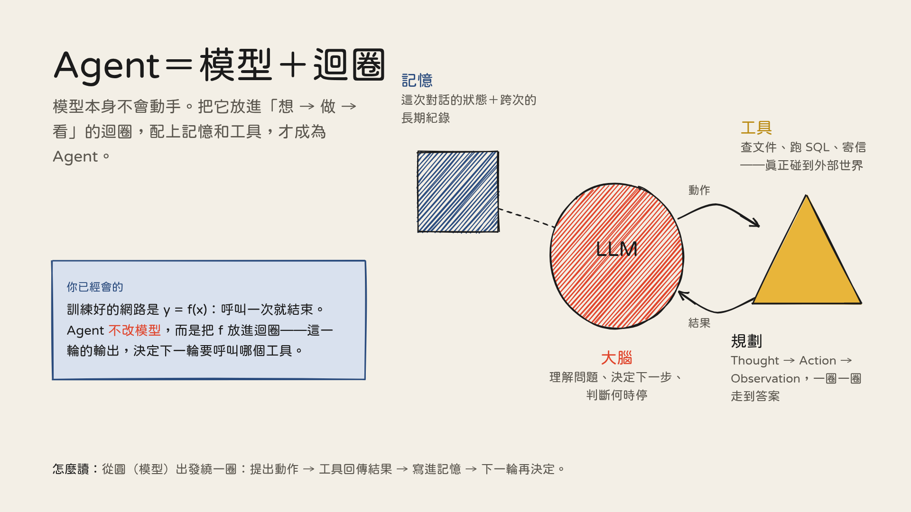
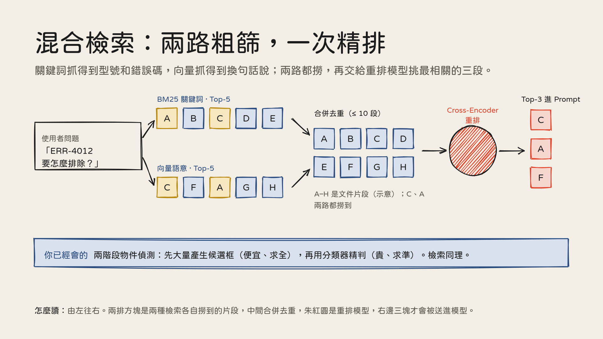
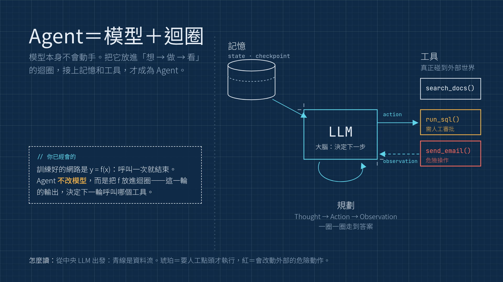
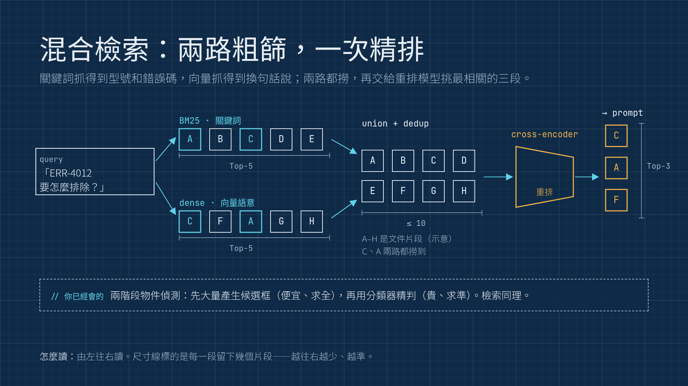
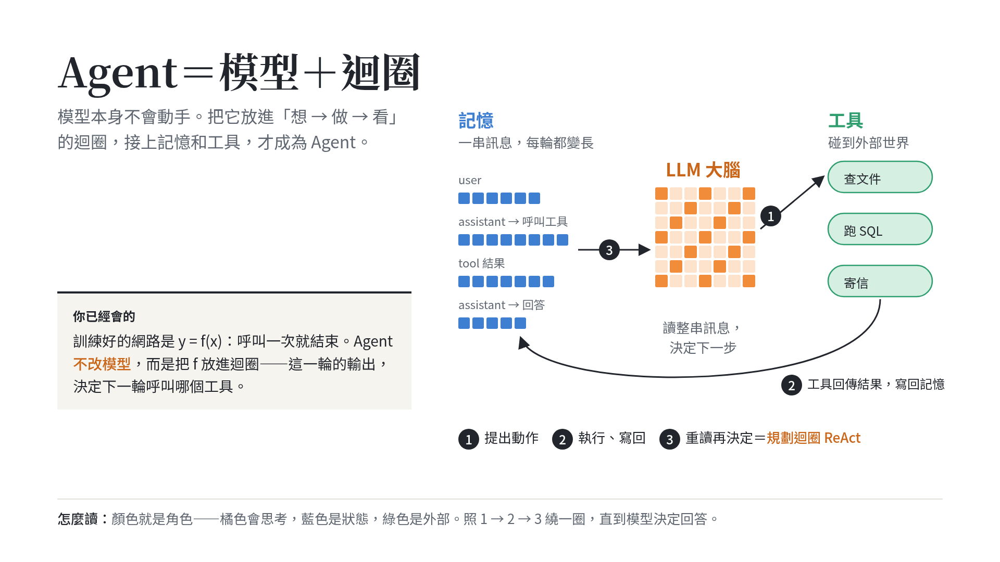
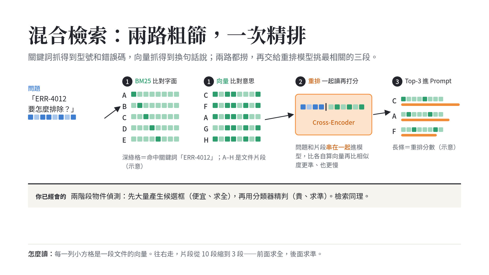

兩頁代表頁：左＝概念型（Agent 四大支柱），右＝流程＋數量型（混合檢索 → 重排）。每頁都有「你已經會的」搭橋元件。
沿用 EDA 課的紙色底＋手繪幾何。圓＝LLM 推理、方＝狀態／記憶、三角＝會碰外部的動作。
適合：和 EDA 課成同一系列。代價：兩門課長得一樣。


深靛方格底＋細白線＋等寬字。青＝資料流、琥珀＝要人工審批、紅＝危險操作；尺寸線標數量。
適合：狀態機、多 agent、MCP 系統圖。代價：深底在明亮教室對比較差。


白底、概念固定一色（橘＝模型、藍＝輸入與狀態、綠＝外部資料與工具），向量和訊息畫成小方格條，步驟用編號。
適合：懂深度學習的學生——張量畫成彩色格子是他們熟的視覺語言。代價：純系統架構圖要另訂畫法。

